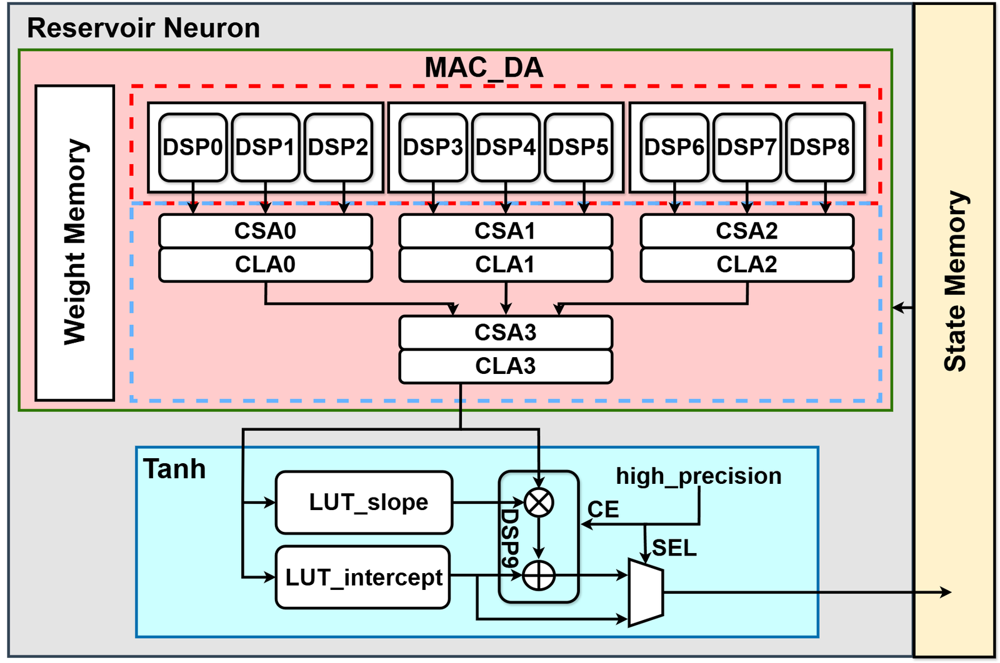
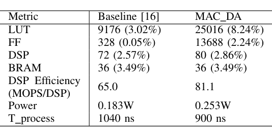
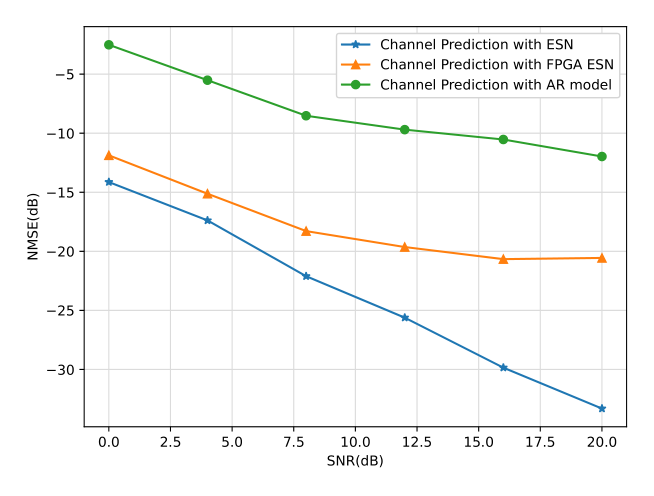
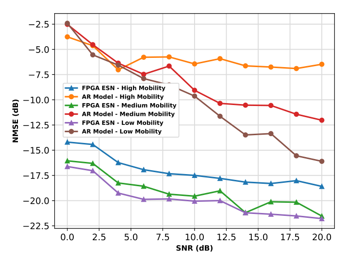

Hybrid DSP–CLB reservoir neuron
MIMO channels change quickly with user mobility, so channel state information must be predicted ahead of time, and the predictor has to keep up in real time on modest hardware. This paper uses a small Echo State Network (ESN) to predict 2×2 MIMO channels 20 symbols ahead and implements its inference on a Virtex-7 FPGA with an optimized reservoir neuron.
Design
ESN channel predictor
Channel coefficients for 2 transmit antennas, 2 receive antennas and 8 subcarriers are split into real and imaginary parts, giving 64 input and 64 output features. An 8-neuron reservoir (spectral radius 0.7, sparsity 0.8) maps the current symbol's channel to the channel 20 symbols later, trained on NS-3 3GPP V2V urban channels.
MAC_DA reservoir neuron
Each neuron computes its input and recurrent products as one multiply-accumulate over the concatenated vector {x; r}. Nine DSP slices work in parallel, and their partial sums are merged by a fast adder tree of four carry-save/carry-lookahead blocks, so a neuron finishes in ⌈(Ni+Nr)/9⌉+2 cycles. Because the reservoir is small, one MAC_DA per neuron is affordable.
RALUT-based tanh
The tanh activation works on |s| (sign restored at the end) and truncates the input to [0, 8]. LUTs of intercepts and slopes feed a DSP that performs linear interpolation; above a threshold the DSP is bypassed and the intercept is used directly. This range-addressable LUT replaces two 256-entry BRAMs with three 128-entry ones, a 25% BRAM saving.

Results
- On a 72×72 matrix-vector product, MAC_DA raises DSP efficiency from 65.0 to 81.1 MOPS/DSP and cuts processing time from 1040 ns to 900 ns (13.5%) compared with an earlier DSP-only MAC design, at the cost of more LUTs (25016 vs 9176), FFs (13688 vs 328) and power (0.253 W vs 0.183 W).
- At 100 MHz the full ESN inference takes 97 clock cycles and processes 65.98M input samples/s, reported as 527% faster than the earlier ESN design.
- The complete 64-input/64-output system uses 20127 LUTs (6.63%), 2927 FFs (0.48%), 40 BRAMs (3.88%) and 152 DSPs (5.43%) of the Virtex-7 VC707.
- At medium mobility (10 km/h), both the software and the FPGA ESN have lower NMSE than an order-20 AR predictor at every SNR from 0 to 20 dB; the FPGA ESN trails the software ESN slightly at low SNR, with the gap widening at high SNR.
- Across 5, 10 and 20 km/h mobility, the FPGA ESN beats the AR predictor in every case over the full 0–20 dB SNR range.


